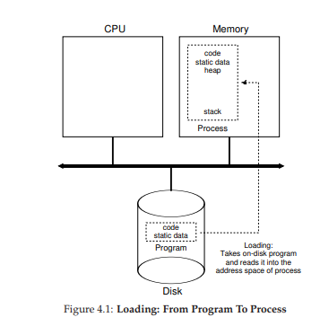
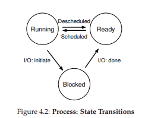
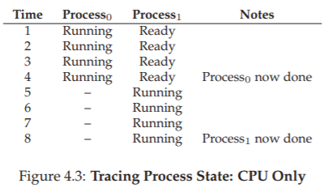
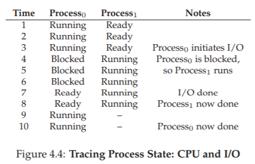

4. Sự trừu tượng: Process (tiến trình)
Trong chương này, chúng ta sẽ thảo luận về một trong những sự trừu tượng (abstraction) cơ bản nhất mà hệ điều hành cung cấp cho người dùng: process (tiến trình).
Một định nghĩa không chính thức về process khá đơn giản: đó là một chương trình đang chạy [V+65, BH70]. Bản thân chương trình khi nằm trên đĩa chỉ là một thực thể “vô hồn”: một tập hợp các lệnh (và có thể là static data (dữ liệu tĩnh)), chờ được kích hoạt. Chính hệ điều hành là thành phần lấy những byte đó, cho chúng chạy, và biến chương trình thành một thực thể hữu ích.
Thực tế, người dùng thường muốn chạy nhiều chương trình cùng lúc; ví dụ, trên máy tính để bàn hoặc laptop, bạn có thể chạy trình duyệt web, chương trình email, một trò chơi, một trình phát nhạc,... Thậm chí, một hệ thống điển hình có thể chạy hàng chục hoặc hàng trăm process đồng thời. Điều này làm hệ thống trở nên dễ sử dụng, vì người dùng không cần bận tâm xem CPU có đang rảnh hay không; đơn giản chỉ là “chạy chương trình”. Từ đây, nảy sinh một thách thức:
VẤN ĐỀ CỐT LÕI: LÀM THẾ NÀO ĐỂ TẠO RA ẢO GIÁC VỀ NHIỀU CPU?
Trong khi thực tế chỉ có vài CPU vật lý, làm thế nào hệ điều hành có thể tạo ra ảo giác rằng có một nguồn CPU gần như vô hạn?
Hệ điều hành giải quyết bằng cách ảo hóa CPU (virtualizing the CPU). Bằng cách chạy một process, rồi dừng nó để chạy process khác, và lặp lại, hệ điều hành tạo ra ảo giác rằng có nhiều CPU ảo tồn tại, trong khi thực tế chỉ có một (hoặc một vài) CPU vật lý. Kỹ thuật cơ bản này gọi là time sharing (chia sẻ theo thời gian) CPU. Nhờ đó, người dùng có thể chạy nhiều process đồng thời; chi phí phải trả là hiệu năng, vì mỗi process sẽ chạy chậm hơn khi CPU phải được chia sẻ.
Để hiện thực hóa ảo hóa CPU một cách hiệu quả, hệ điều hành cần cả cơ chế (mechanism) ở mức thấp lẫn policy (chính sách) ở mức cao.
Mechanism (cơ chế): các phương pháp hoặc giao thức mức thấp để hiện thực một chức năng cần thiết. Ví dụ: ta sẽ học về context switch (chuyển ngữ cảnh) — cơ chế cho phép OS dừng một chương trình và bắt đầu chạy chương trình khác trên CPU. Đây là cơ chế time sharing mà mọi hệ điều hành hiện đại đều sử dụng.
💡 TIP: Sử dụng Time Sharing và Space Sharing
Time sharing là kỹ thuật cơ bản giúp hệ điều hành chia sẻ một tài nguyên. Tài nguyên (ví dụ CPU hoặc đường truyền mạng) được cho một đối tượng sử dụng một thời gian ngắn, sau đó đến đối tượng khác, luân phiên như vậy.
Ngược lại, space sharing (chia sẻ theo không gian) chia tài nguyên theo “không gian”. Ví dụ, dung lượng đĩa là một tài nguyên space-shared: khi một block đã được gán cho một file, nó sẽ không được gán cho file khác cho đến khi người dùng xóa file ban đầu.
Policy: là các thuật toán đưa ra quyết định trong hệ điều hành. Ví dụ: khi có nhiều chương trình sẵn sàng chạy trên CPU, OS cần quyết định chạy chương trình nào. Scheduling policy (chính sách lập lịch) sẽ đưa ra quyết định này, thường dựa trên thông tin lịch sử (ví dụ: chương trình nào đã chạy nhiều hơn trong phút vừa qua?), đặc điểm workload (loại chương trình đang chạy), và tiêu chí hiệu năng (tối ưu cho tính tương tác hay cho thông lượng?).
4.1 Sự trừu tượng: Process
Sự trừu tượng mà hệ điều hành cung cấp cho một chương trình đang chạy chính là process. Như đã nói ở trên, process đơn giản là một chương trình đang excecute. Tại một thời điểm bất kỳ, ta có thể mô tả process bằng cách liệt kê những thành phần hệ thống mà nó truy cập hoặc ảnh hưởng trong suốt quá trình chạy.
Để hiểu process gồm những gì, ta cần hiểu machine state (trạng thái máy): tức là tập hợp các giá trị mà chương trình có thể đọc hoặc ghi trong khi excecute. Vậy, tại một thời điểm bất kỳ, những phần nào của máy tính quan trọng đối với việc chạy chương trình?
Memory (bộ nhớ): thành phần rõ ràng nhất. Các lệnh của chương trình nằm trong bộ nhớ; dữ liệu mà chương trình đọc và ghi cũng nằm trong bộ nhớ. Vì vậy, vùng bộ nhớ mà process có thể truy cập (gọi là address space – không gian địa chỉ) là một phần của process.
Registers (thanh ghi): nhiều lệnh của CPU trực tiếp đọc/ghi các thanh ghi, nên chúng cũng là thành phần cốt lõi của machine state. Đặc biệt có một số thanh ghi quan trọng bao gồm Program Counter (PC), còn gọi là Instruction Pointer (IP), cho biết lệnh tiếp theo cần excecute. Đồng thời, còn có Stack Pointer và Frame Pointer đi kèm được dùng để quản lý stack (ngăn xếp), nơi lưu tham số hàm (function parameters), biến cục bộ (local variables) và địa chỉ trả về (return addresses).
I/O state (trạng thái nhập/xuất): chương trình thường truy cập cả các thiết bị lưu trữ lâu dài. Ví dụ: process có thể duy trì danh sách các file đang mở.
TIP: Tách biệt Policy và Mechanism
Trong nhiều hệ điều hành, nguyên lý thiết kế phổ biến là tách biệt policy và mechanism [L+75].
Mechanism trả lời câu hỏi “làm thế nào” (how). Ví dụ: làm thế nào để OS thực hiện context switch?
Policy trả lời câu hỏi “chọn cái nào” (which). Ví dụ: OS nên chạy process nào ngay lúc này?
Việc tách rời này cho phép thay đổi policy dễ dàng mà không ảnh hưởng đến cơ chế, và đây cũng là một dạng modularity (tính mô-đun) — nguyên tắc chung trong thiết kế phần mềm.
4.2 API của Process (Tiến trình)
Mặc dù chúng ta sẽ hoãn việc bàn chi tiết về một API process thực sự cho đến các chương sau, nhưng trước hết, ở đây ta sẽ phác thảo những thành phần cơ bản cần có trong bất kỳ interface (giao diện) nào của hệ điều hành. Các API này, dưới một dạng nào đó, đều có mặt trong mọi hệ điều hành hiện đại.
- Create (Tạo): Hệ điều hành phải cung cấp phương thức để tạo process mới. Khi bạn gõ một lệnh trong shell, hoặc nhấp đúp vào biểu tượng ứng dụng, hệ điều hành sẽ được gọi để tạo ra một process mới nhằm chạy chương trình bạn yêu cầu.
- Destroy (Hủy): Cũng như việc tạo process, hệ điều hành phải cung cấp interface để hủy process một cách cưỡng bức. Tất nhiên, nhiều process sẽ tự chạy và thoát khi hoàn tất; tuy nhiên, khi chúng không làm vậy, người dùng có thể muốn “kill” (dừng) chúng, và do đó, interface để kết thúc một process “chạy mất kiểm soát” là rất hữu ích.
- Wait (Chờ): Đôi khi, người dùng cần chờ cho đến khi một process kết thúc; do đó, hầu hết hệ điều hành đều cung cấp một interface chờ process.
- Miscellaneous Control (Các điều khiển khác): Ngoài việc hủy hoặc chờ process, hệ điều hành còn cung cấp thêm các điều khiển khác. Ví dụ, hầu hết hệ điều hành cho phép tạm dừng (suspend) một process và sau đó khôi phục (resume) nó để tiếp tục chạy.
- Status (Trạng thái): Thường có các interface để lấy thông tin trạng thái của process, chẳng hạn như process đã chạy bao lâu hoặc hiện tại đang ở trạng thái nào.

Hình 4.1: Quá trình load – Từ Chương trình thành Process
4.3 Tạo Process: Chi tiết hơn một chút
Một điều bí ẩn mà ta cần làm rõ là: làm thế nào chương trình (program) được biến thành process? Cụ thể hơn, hệ điều hành làm thế nào để khởi chạy một chương trình? Quá trình tạo process thực sự diễn ra như thế nào?
Bước đầu tiên mà hệ điều hành phải thực hiện là load mã lệnh (code) và static data (ví dụ: các biến đã khởi tạo) của chương trình vào bộ nhớ, trong không gian địa chỉ (address space) của process. Ban đầu, chương trình nằm trên đĩa (hoặc, trong nhiều hệ thống hiện đại, ổ SSD dạng flash) dưới một định dạng excecute. Do đó, việc load chương trình và static data vào bộ nhớ đòi hỏi hệ điều hành phải đọc các byte từ đĩa và đặt chúng vào một vị trí nào đó trong bộ nhớ (như minh họa trong Hình 4.1).
Trong các hệ điều hành đơn giản (hoặc đời đầu), quá trình load thường được thực hiện eagerly (tức là load toàn bộ trước khi chạy). Ngược lại, các hệ điều hành hiện đại áp dụng cách lazy loading (load từng phần mã hoặc dữ liệu chỉ khi cần trong quá trình excecute). Để hiểu rõ lazy loading hoạt động thế nào, chúng ta cần nắm vững các cơ chế như paging (trang bộ nhớ) và swapping (hoán đổi), sẽ được bàn kỹ hơn trong phần ảo hóa bộ nhớ. Tạm thời, bạn chỉ cần nhớ rằng trước khi chạy bất cứ thứ gì, hệ điều hành phải làm công việc chuẩn bị: đưa các phần quan trọng của chương trình từ đĩa vào bộ nhớ.
Khi mã lệnh và static data đã được load vào bộ nhớ, hệ điều hành còn phải làm thêm một số việc trước khi process có thể chạy:
- Cấp phát bộ nhớ cho ngăn xếp (stack): Các chương trình C sử dụng stack để lưu biến cục bộ, tham số hàm và địa chỉ trả về. Hệ điều hành sẽ cấp phát vùng nhớ này và gán nó cho process. Ngoài ra, nó còn khởi tạo stack với tham số đầu vào, cụ thể là các giá trị truyền cho hàm
main(), tức làargcvà mảngargv. - Cấp phát bộ nhớ cho heap: Trong C, heap được dùng để lưu trữ dữ liệu được cấp phát động (dynamic memory). Chương trình yêu cầu vùng nhớ này thông qua lời gọi
malloc(), và giải phóng nó bằngfree(). Heap thường nhỏ ban đầu, nhưng có thể mở rộng khi chương trình chạy và yêu cầu thêm bộ nhớ; lúc đó hệ điều hành có thể cấp thêm. Heap thường dùng cho các cấu trúc dữ liệu phức tạp như danh sách liên kết, bảng băm, cây, v.v. - Khởi tạo I/O: Ví dụ, trong các hệ thống UNIX, mỗi process mặc định có 3 file descriptor (bộ mô tả tệp) mở sẵn: chuẩn nhập (stdin), chuẩn xuất (stdout), và chuẩn lỗi (stderr). Nhờ đó, chương trình có thể dễ dàng đọc dữ liệu từ terminal và in kết quả ra màn hình.
Sau khi load mã lệnh và static data, tạo stack, chuẩn bị heap, và thiết lập I/O, hệ điều hành đã sẵn sàng để process bắt đầu excecute. Bước cuối cùng là chuyển quyền điều khiển CPU sang chương trình tại điểm vào (entry point), thường là hàm main(). Bằng cách “nhảy” đến main() (thông qua một cơ chế đặc biệt sẽ được bàn trong chương tiếp theo), hệ điều hành đã chính thức khởi động process.
4.4 Các Trạng Thái của Process
Giờ đây, khi đã nắm được process là gì và sơ bộ cách nó được tạo ra, chúng ta sẽ bàn về các trạng thái mà một process có thể ở tại một thời điểm. Khái niệm process có thể tồn tại trong nhiều trạng thái khác nhau bắt nguồn từ các hệ thống máy tính đời đầu [DV66, V+65].
Trong một mô hình đơn giản, process có thể ở một trong ba trạng thái:
- Running (Đang chạy): Process đang thực sự chạy trên CPU, nghĩa là nó đang excecute các chỉ thị.
- Ready (Sẵn sàng): Process đã sẵn sàng chạy, nhưng vì lý do nào đó hệ điều hành chưa cho nó chiếm CPU ở thời điểm hiện tại.
- Blocked (Bị chặn): Process đang chờ một sự kiện khác để có thể tiếp tục chạy. Ví dụ: khi process gửi yêu cầu I/O đến đĩa, nó sẽ bị chặn cho đến khi thao tác đó hoàn tất, trong khi đó CPU có thể phục vụ process khác.

Hình 4.2: Các trạng thái của Process và sự chuyển đổi
Trong sơ đồ trạng thái (Hình 4.2), bạn có thể thấy process được chuyển qua lại giữa trạng thái ready và running dưới sự điều phối của hệ điều hành.
- Từ ready → running: process được schedule (lập lịch để chạy).
- Từ running → ready: process bị deschedule (dừng chạy).
- Khi process chuyển sang blocked, hệ điều hành sẽ giữ nó trong trạng thái này cho đến khi sự kiện cần thiết xảy ra (ví dụ: I/O hoàn tất), sau đó chuyển nó về trạng thái ready (và có thể lập lịch chạy ngay).
Ví dụ: giả sử có hai process chạy, cả hai chỉ dùng CPU (không I/O). Dấu vết trạng thái (trace) của chúng sẽ giống như Hình 4.3.

Hình 4.3: Dấu vết trạng thái process – chỉ dùng CPU
Trong ví dụ tiếp theo, một process thực hiện I/O sau một thời gian chạy. Khi đó nó chuyển sang trạng thái blocked, nhường CPU cho process còn lại. Dấu vết tình huống này được thể hiện ở Hình 4.4.

Hình 4.4: Dấu vết trạng thái process – CPU và I/O
Cụ thể, Process0 thực hiện một yêu cầu I/O và bị chặn để chờ kết quả; điều này thường xảy ra khi đọc từ đĩa hoặc chờ gói tin mạng. Hệ điều hành nhận thấy Process0 không dùng CPU, nên lập lịch chạy Process1. Trong khi Process1 chạy, I/O hoàn tất, Process0 chuyển về trạng thái ready. Khi Process1 kết thúc, Process0 được chạy tiếp cho đến khi hoàn thành.
Lưu ý: ngay cả trong ví dụ đơn giản này, hệ điều hành vẫn phải đưa ra nhiều quyết định. Thứ nhất, hệ thống chọn chạy Process1 trong khi Process0 bị chặn I/O – điều này giúp tận dụng CPU tốt hơn. Thứ hai, khi I/O của Process0 hoàn tất, hệ điều hành không lập tức chuyển lại cho Process0 mà để Process1 tiếp tục. Đây có phải là quyết định đúng hay không? Những quyết định như vậy được đưa ra bởi OS scheduler (bộ lập lịch của hệ điều hành) – chủ đề chúng ta sẽ bàn kỹ hơn trong các chương tới.
4.5 Cấu Trúc Dữ Liệu
Hệ điều hành cũng chỉ là một chương trình, và giống như mọi chương trình khác, nó sử dụng các cấu trúc dữ liệu để quản lý thông tin.
Ví dụ: để theo dõi trạng thái của các process, hệ điều hành thường duy trì một danh sách process (process list) chứa tất cả process đang ở trạng thái ready, kèm thêm thông tin về process hiện tại đang chạy. Hệ điều hành cũng cần quản lý danh sách các process blocked; khi một sự kiện I/O hoàn tất, OS phải đánh thức đúng process liên quan và chuyển nó sang trạng thái ready.
Hình 4.5 thể hiện Thông tin OS theo dõi cho mỗi process trong nhân xv6 [CK+08]. Trong các hệ điều hành thực tế như Linux, Mac OS X, hay Windows, cấu trúc quản lý process còn phức tạp hơn nhiều. Bạn có thể tự tìm hiểu để so sánh mức độ chi tiết.
Trong hình, ta thấy một số thông tin quan trọng mà hệ điều hành lưu cho mỗi process. Register context (Ngữ cảnh thanh ghi): Đối với process bị dừng, hệ điều hành lưu lại toàn bộ giá trị các thanh ghi vào vùng nhớ này. Khi cần chạy lại process, OS chỉ việc khôi phục các giá trị vào thanh ghi vật lý để tiếp tục excecute. Kỹ thuật này gọi là context switch (chuyển ngữ cảnh) – sẽ được bàn kỹ trong các chương tiếp theo.
// the registers xv6 will save and restore
// to stop and subsequently restart a process
struct context {
int eip;
int esp;
int ebx;
int ecx;
int edx;
int esi;
int edi;
int ebp;
};
// the different states a process can be in
enum proc_state {
UNUSED,
EMBRYO,
SLEEPING,
RUNNABLE,
RUNNING,
ZOMBIE
};
// the information xv6 tracks about each process
// including its register context and state
struct proc {
char * mem;
// Start of process memory
uint sz;
// Size of process memory
char * kstack;
// Bottom of kernel stack
// for this process
enum proc_state state; // Process state
int pid;
// Process ID
struct proc * parent;
// Parent process
void * chan;
// If !zero, sleeping on chan
int killed;
// If !zero, has been killed
struct file * ofile[NOFILE]; // Open files
struct inode * cwd;
// Current directory
struct context context; // Switch here to run process
struct trapframe * tf;
// Trap frame for the
// current interrupt
};
Bạn cũng có thể thấy từ hình minh họa rằng một process (process) có thể ở một số trạng thái khác ngoài đang chạy (running), sẵn sàng (ready), và bị chặn (blocked). Đôi khi một hệ thống sẽ có một trạng thái ban đầu (initial state) mà process ở trong đó khi nó đang được tạo ra. Ngoài ra, một process có thể được đặt vào một trạng thái cuối (final state), nơi nó đã thoát ra nhưng chưa được dọn dẹp (trong các hệ thống dựa trên UNIX, trạng thái này được gọi là trạng thái zombie (thây ma)¹).
(Giải thích: Trạng thái này được gọi là "zombie" vì process đã "chết" - tức là đã kết thúc excecute - nhưng thông tin về nó vẫn còn tồn tại trong bảng process, chưa được "chôn cất" hay dọn dẹp hoàn toàn.)
Trạng thái cuối này có thể hữu ích vì nó cho phép các process khác (thường là process cha đã tạo ra process này) kiểm tra mã trả về (return code) của process và xem liệu process vừa hoàn thành có excecute thành công hay không (thường thì các chương trình trong hệ thống dựa trên UNIX trả về giá trị 0 khi chúng đã hoàn thành tác vụ thành công, và khác 0 trong trường hợp ngược lại). Khi xong việc, process cha sẽ thực hiện một lời gọi cuối cùng (ví dụ, wait()) để chờ đợi sự hoàn thành của process con, và cũng để báo cho OS rằng nó có thể dọn dẹp bất kỳ cấu trúc dữ liệu nào liên quan đến process đã không còn tồn tại này.
TẢN MẠN: CẤU TRÚC DỮ LIỆU — DANH SÁCH TIẾN TRÌNH
Các hệ điều hành chứa đầy đủ các cấu trúc dữ liệu quan trọng khác nhau mà chúng ta sẽ thảo luận trong tài liệu này. Danh sách process (Process List), còn được gọi là danh sách tác vụ (task list), là cấu trúc đầu tiên như vậy. Nó là một trong những cấu trúc đơn giản hơn, nhưng chắc chắn bất kỳ hệ điều hành nào có khả năng chạy nhiều chương trình cùng một lúc sẽ có một thứ gì đó tương tự như cấu trúc này để theo dõi tất cả các chương trình đang chạy trong hệ thống. Đôi khi người ta gọi cấu trúc riêng lẻ lưu trữ thông tin về một process là Khối Quản lý Process (Process Control Block - PCB), một cách nói hoa mỹ để chỉ một cấu trúc trong ngôn ngữ C chứa thông tin về mỗi process (đôi khi còn được gọi là bộ mô tả process - process descriptor).
4.6 Tóm tắt
Chúng ta đã giới thiệu khái niệm trừu tượng hóa cơ bản nhất của OS: process. Nó được xem một cách khá đơn giản là một chương trình đang chạy. Với quan điểm khái niệm này, bây giờ chúng ta sẽ chuyển sang các chi tiết cốt lõi: các cơ chế cấp thấp cần thiết để triển khai process, và các policy cấp cao cần thiết để lập lịch (schedule) cho chúng một cách thông minh. Bằng cách kết hợp các cơ chế và policy, chúng ta sẽ xây dựng sự hiểu biết của mình về cách một hệ điều hành ảo hóa CPU.
TẢN MẠN: CÁC THUẬT NGỮ CHÍNH VỀ TIẾN TRÌNH
- Tiến trình (process) là khái niệm trừu tượng hóa chính của hệ điều hành về một chương trình đang chạy. Tại bất kỳ thời điểm nào, process có thể được mô tả bởi trạng thái của nó: nội dung bộ nhớ trong không gian địa chỉ (address space) của nó, nội dung của các thanh ghi CPU (bao gồm bộ đếm chương trình - program counter và con trỏ ngăn xếp - stack pointer, cùng nhiều thanh ghi khác), và thông tin về I/O (chẳng hạn như các tập tin đang mở có thể được đọc hoặc ghi).
- API process bao gồm các lời gọi mà chương trình có thể thực hiện liên quan đến process. Thông thường, điều này bao gồm việc tạo (creation), hủy (destruction), và các lời gọi hữu ích khác.
- Các process tồn tại ở một trong nhiều trạng thái process khác nhau, bao gồm đang chạy (running), sẵn sàng chạy (ready to run), và bị chặn (blocked). Các sự kiện khác nhau (ví dụ: được lập lịch để chạy hoặc bị rút khỏi CPU, hoặc chờ một thao tác I/O hoàn tất) sẽ chuyển một process từ trạng thái này sang trạng thái khác.
- Một danh sách process (process list) chứa thông tin về tất cả các process trong hệ thống. Mỗi mục nhập được tìm thấy trong một cấu trúc đôi khi được gọi là khối quản lý process (process control block - PCB), thực chất chỉ là một cấu trúc chứa thông tin về một process cụ thể.
Tham khảo
[BH70] “The Nucleus of a Multiprogramming System”
Per Brinch Hansen
Communications of the ACM, Volume 13, Number 4, April 1970
This paper introduces one of the first microkernels in operating systems history, called Nucleus. The idea of smaller, more minimal systems is a theme that rears its head repeatedly in OS history; it all began with Brinch Hansen’s work described herein.
[CK+08] “The xv6 Operating System”
Russ Cox, Frans Kaashoek, Robert Morris, Nickolai Zeldovich
From: https://github.com/mit-pdos/xv6-public
The coolest real and little OS in the world. Download and play with it to learn more about the details of how operating systems actually work. We have been using an older version (2012-01-30-1-g1c41342) and hence some examples in the book may not match the latest in the source.
[DV66] “Programming Semantics for Multiprogrammed Computations”
Jack B. Dennis and Earl C. Van Horn
Communications of the ACM, Volume 9, Number 3, March 1966
This paper defined many of the early terms and concepts around building multiprogrammed systems.
[L+75] “Policy/mechanism separation in Hydra”
R. Levin, E. Cohen, W. Corwin, F. Pollack, W. Wulf
SOSP 1975
An early paper about how to structure operating systems in a research OS known as Hydra. While Hydra never became a mainstream OS, some of its ideas influenced OS designers.
[V+65] “Structure of the Multics Supervisor”
V.A. Vyssotsky, F. J. Corbato, R. M. Graham
Fall Joint Computer Conference, 1965
An early paper on Multics, which described many of the basic ideas and terms that we find in modern systems. Some of the vision behind computing as a utility are finally being realized in modern cloud systems.